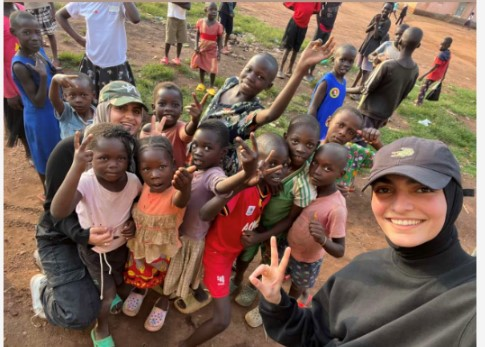

Jeg har haft mange forskellige jobs i løbet af mit liv, såsom opvasker, forlystelsesparker, lagerarbejde.
Dog bruger jeg meget tid på min skole, så nu holder jeg mig kun til 2 jobs.
Nedenstående er de to jeg har nu.
Friviligt arbejde - I form af projekter i Uganda.

Sos international - hvor jeg er accistent kordinator.